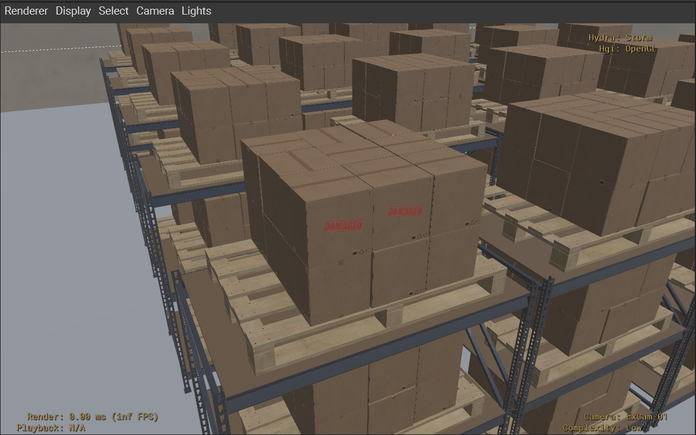

Ad Hoc Arcs Refinement#
What Is Ad Hoc Arcs Refinement?#
New composition arcs can be added to an instanceable prim on the local layer stack. Within the additional composition arc, you can introduce new opinions on an instance. The result is a new prototype for that instance and any copies that share the new composition arc.
Composition arcs can be added to introduce ad hoc edits without disabling instancing.#
In this example, we have four instances of the robot arm. On one of the instanceable prims, we can add a new internal reference with a different pose for the robot arm. The result is three instances using the original prototype and one using the new prototype with an additional internal reference.
The more instances you apply the new composition arc to, the more beneficial and appealing this technique gets. In this example, a dozen or so robot arms using the same pose can make this technique worthwhile.
If you don’t foresee a lot of instances leveraging the new ad hoc composition arc, then deinstancing may be a better option and more straight-forward. Don’t feel like you have to preserve instancing at all costs. USD has tons of ways to get performance without instancing enabled.
Exercise: Ad Hoc Arcs Refinement#
Introduction#
In this exercise, you will learn ad hoc arcs refinement, a technique that adds new composition arcs to instanceable prims to introduce variety while preserving instancing benefits. You’ll add stamps boxes with the word “Damaged” using internal references, observe how this creates new prototypes, and understand when this approach is most beneficial compared to other refinement techniques.
Exploring the Damaged Stamp Asset#
In this exercise, we’ll simulate a box that was damaged in the warehouse. We’ll add a “Damaged” stamp on a couple of boxes while maintaining instancing enabled for them.
Open
instancing/src_assets/Assets/Utilities/MiscDecals/MiscDecals.usdin VSCode to inspect the USDA.
1#usda 1.0
2(
3 endTimeCode = 100
4 metersPerUnit = 0.01
5 startTimeCode = 0
6 timeCodesPerSecond = 60
7 upAxis = "Z"
8)
9class "_MixinOverrides"
10{
11 over "DamagedStamp"
12 {
13 def Mesh "DamagedStamp_01" (
14 prepend apiSchemas = ["MaterialBindingAPI"]
15 )
16 {
17 rel material:binding = </_MixinOverrides/DamagedStamp/Looks/M_DamagedStamp_01> (
18 bindMaterialAs = "weakerThanDescendants"
19 )
20 uniform token subdivisionScheme = "none"
21 int[] faceVertexCounts = [4]
22 int[] faceVertexIndices = [0, 1, 2, 3]
23 point3f[] points = [
24 (15.31, 5.00, 0),
25 (0, 5.00, 0),
26 (0, 0, 0),
27 (15.31, 0, 0)
28 ]
29 normal3f[] normals = [(0, 0, 1), (0, 0, 1), (0, 0, 1), (0, 0, 1)]
30 texCoord2f[] primvars:st = [(0.715, 0.233), (0.0, 0.233), (0.0, 0.0), (0.715, 0.0)](
31 interpolation = "faceVarying"
32 )
33 uniform int[] primvars:st:indices = [0, 1, 2, 3]
34
35 float3 xformOp:rotateXYZ = (90.0, 10.0, -90.0)
36 float3 xformOp:scale = (1, 1, 1)
37 double3 xformOp:translate = (-13.07, 7.0, 13.0)
38 uniform token[] xformOpOrder = ["xformOp:translate", "xformOp:rotateXYZ", "xformOp:scale"]
39 }
40 over "Looks"
41 {
42 def Material "M_DamagedStamp_01"
43 {
44 token outputs:surface.connect = </_MixinOverrides/DamagedStamp/Looks/M_DamagedStamp_01/UsdPreviewSurface.outputs:surface>
45 def Shader "UsdPreviewSurface"
46 {
47 uniform token info:id = "UsdPreviewSurface"
48 float inputs:clearcoat
49 float inputs:clearcoatRoughness = 1
50 color3f inputs:diffuseColor = (1.0, 0.0, 0.0)
51 float inputs:ior = 1.7887884
52 normal3f inputs:normal
53 float inputs:opacity.connect = </_MixinOverrides/DamagedStamp/Looks/M_DamagedStamp_01/UsdUVTexture.outputs:r>
54 token inputs:opacityMode = "presence"
55 float inputs:opacityThreshold = 0.0
56 float inputs:roughness = 1.0
57 token outputs:surface
58 }
59
60 def Shader "UsdUVTexture"
61 {
62 uniform token info:id = "UsdUVTexture"
63 float4 inputs:bias = (0, 0, 0, 0)
64 float4 inputs:fallback
65 asset inputs:file = @./Textures/damaged_stamp_opacity.jpg@
66 float4 inputs:scale = (1, 1, 1, 1)
67 token inputs:sourceColorSpace = "sRGB"
68 float2 inputs:st.connect = </_MixinOverrides/DamagedStamp/Looks/M_DamagedStamp_01/UsdPrimvarReader_float2.outputs:result>
69 token inputs:wrapS = "repeat"
70 token inputs:wrapT = "repeat"
71 float outputs:a
72 float outputs:b
73 float outputs:g
74 float outputs:r
75 float3 outputs:rgb
76 }
77
78 def Shader "UsdPrimvarReader_float2"
79 {
80 uniform token info:id = "UsdPrimvarReader_float2"
81 float2 inputs:fallback
82 string inputs:varname = "st"
83 float2 outputs:result
84 }
85 }
86 }
87 }
88}
/_MixinOverrides/DamagedStamp is a speculative over (override) that introduces a new decal Mesh and Material for the “Damaged” stamp. This is a bit hard-coded to position the stamp perfectly on the “CubeBox_A04_26cm” asset, but it could be designed to be used more modularly so it could be applied to all sorts of assets. We’re going to use this layer as a reference to refine our boxes as an additional ad hoc composition arc.
Adding Ad Hoc Composition Arcs#
Run in the terminal:
Windows:
.\scripts\usdview.bat .\instancing\ex_sg_add_arc_refine\Scenario.usd --camera ExCam_01
Linux:
./scripts/usdview.sh ./instancing/ex_sg_add_arc_refine/Scenario.usd --camera ExCam_01
Tip
Click Camera > Select Camera > ExCam_01 if you ever lose your place in the scene or want to get back to this camera position.
Click Window > Interpreter to open the Interpreter window.
Run the following code in the Interpreter window:
1from pathlib import Path
2stage = usdviewApi.stage
3box1 = stage.GetPrimAtPath("/World/Warehouse/Rack_BoxPallet_A01_01/BoxPallet_A01_03/CubeBox_A04_26cm_18")
4box2 = stage.GetPrimAtPath("/World/Warehouse/Rack_BoxPallet_A01_01/BoxPallet_A01_03/CubeBox_A04_26cm_17")
5stage_path = Path(stage.GetRootLayer().identifier)
6decals_path = stage_path.parent.parent / "src_assets" / "Assets" / "Utilities" / "MiscDecals" / "MiscDecals.usd"
7box1.GetReferences().AddReference(str(decals_path), "/_MixinOverrides/DamagedStamp")
8box2.GetReferences().AddReference(str(decals_path), "/_MixinOverrides/DamagedStamp")
This code overrides the top first and second boxes on the pallet closest to the camera by adding a new reference to MiscDecals.usd on the instanceable prim.
Notice how the top first and second box on the pallet closest to the camera now show a stamp that says, “Damaged”.

Analyzing the Impact on Stage Statistics#
Run the following code in the Interpreter window:
1from pprint import pprint
2stats = UsdUtils.ComputeUsdStageStats(usdviewApi.stage)
3pprint(stats)
This prints a breakdown of the prim and instancing stats. Here’s a summarized comparison to the basic instancing scenario:
Scenario |
Prims |
Instances |
Prototypes |
|---|---|---|---|
Instancing |
1711 |
1450 |
3 |
Ad-hoc Arc Refinement |
1741 |
1450 |
4 |
Key observations:
The prim count increased by 30 prims (from 1711 to 1741)
The instance count remained the same (1450)
A new prototype was created (from 3 to 4 prototypes)
Because prototypes are built off of composition arcs, introducing a new composition arc to an instance triggers the creation of a new prototype with the modifications that we defined in the new arc
The new prototype is shared by the two boxes we overrode.
This technique is most beneficial when you have many instances that will use the same ad hoc composition arc.
Close usdview.
Conclusion#
You’ve successfully learned ad hoc arcs refinement, a technique that adds new composition arcs to instanceable prims to introduce variety while preserving instancing benefits. This approach is most effective when you have multiple instances that will share the same override, as it creates new prototypes that can be reused efficiently across similar instances.